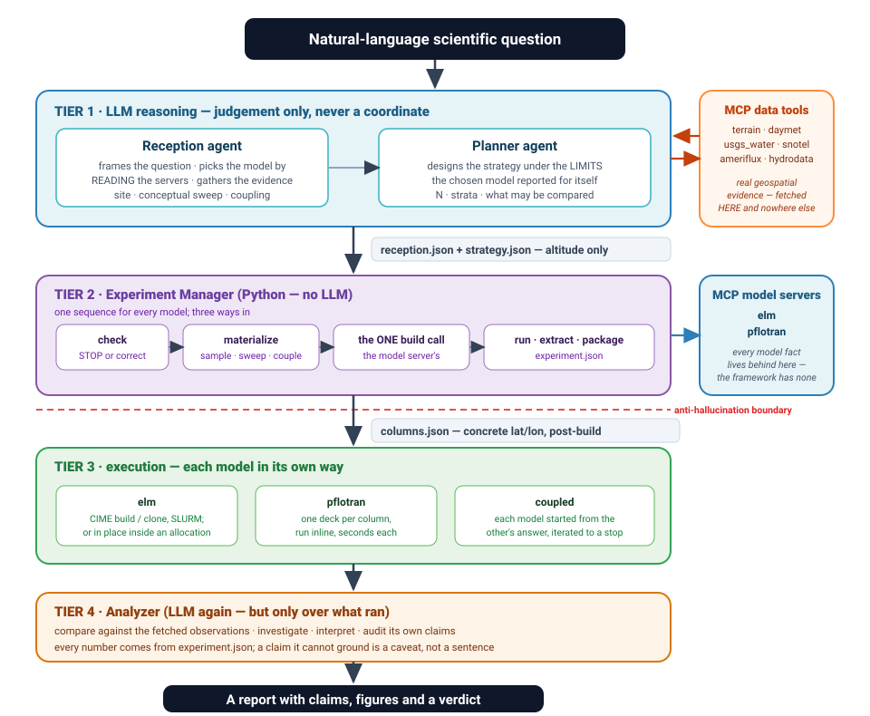
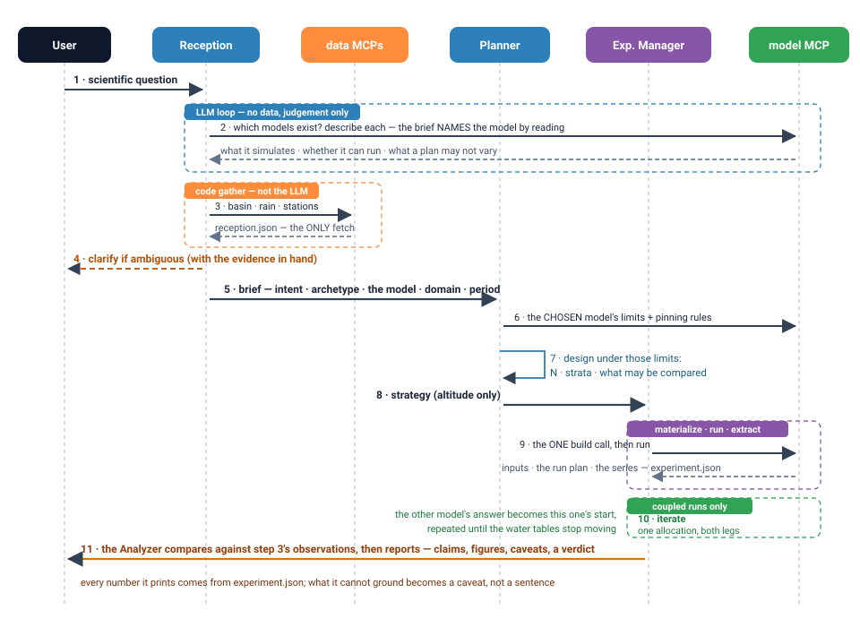
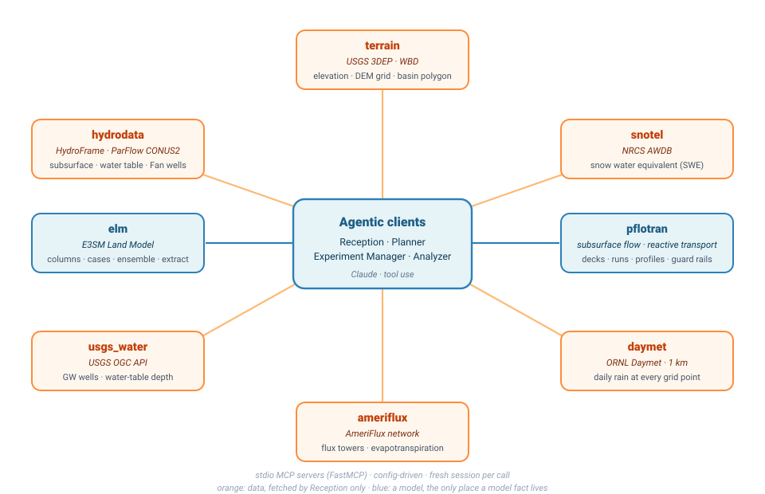
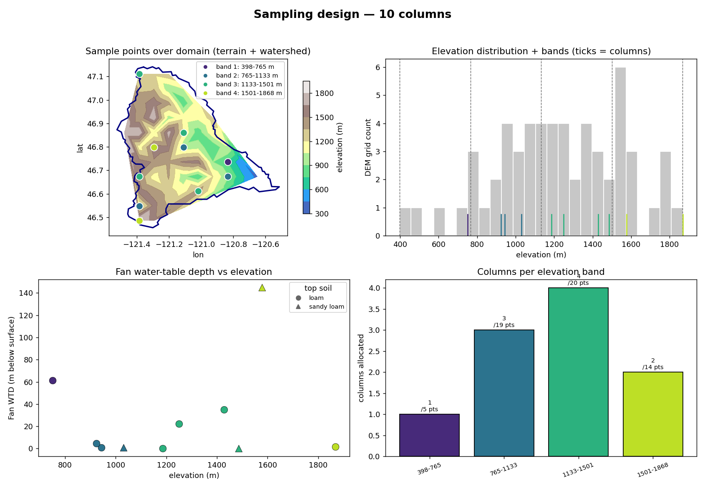
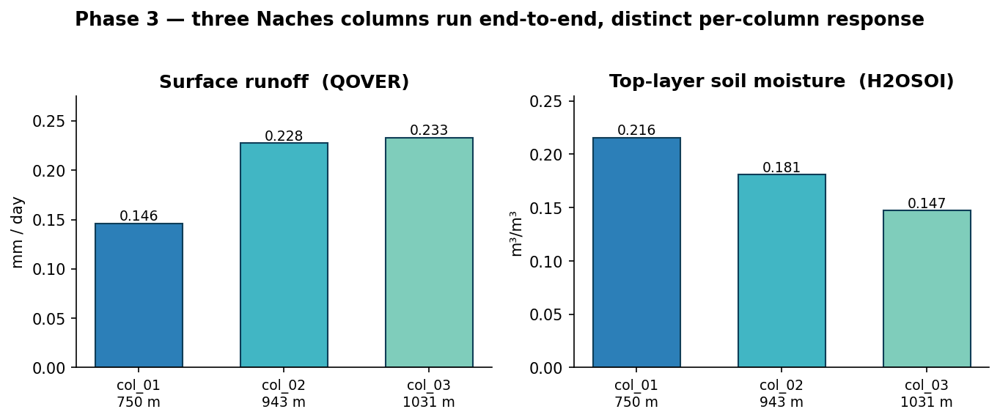

A scientist can ask “how is recharge vs. runoff partitioned across this watershed?” in seconds. Running it takes days: pick sites, fetch terrain/soil/observations, configure dozens of single-column models, build, run, validate.
Which HUC? How many columns? What forcing, soil, validation data?
Coordinates, soil profiles and water tables must come from authoritative datasets — never an LLM’s imagination.
CIME case creation, builds, SLURM, per-column configuration at scale.
The framework automates all three while keeping the scientist in the loop.
Multi-agent LLM framework2Reception frames the question and gathers evidence via MCP tools; the planner designs the experiment strategy.
Never emits coordinates.
Deterministic Python turns the strategy into concrete column points from the real DEM, soil and water-table data.
Each model behind its own MCP server: ELM per-column via CIME build/clone and SLURM; PFLOTRAN one deck per column, run inline. The framework names no model fact of its own.
Key invariant: every latitude/longitude is materialized from data in Tier 2, so the LLM cannot hallucinate a location.
Multi-agent LLM framework3


ask_user tool, exposed only in interactive modeGeneric runtime: ToolLoopAgent exposes MCP tools as OpenAI functions and passes tools= every round (Bedrock/Claude requirement).
validate.py checks the brief & plan (report-only)Default model: claude-opus-4-8-project via the PNNL OpenAI-compatible gateway.
The DEM grid Reception already fetched and clipped, binned into elevation bands; the planner’s N allocated proportional to occupied area (≥1 per band).
Farthest-point spread within each band, plus stations the planner named — pinned only if the variable is pinnable and Reception tagged the station in-basin. Two water-table anchors always.
The chosen model’s server turns the points into its own inputs: ELM snaps each column to a donor gridcell and writes its files; PFLOTRAN joins the subsurface, water table and rain and writes one deck.
Output: columns.json, written after the build — every column carries a real lat/lon and elevation band plus whatever its model learned about it. A sweep and a coupled follow-up take the same slot: one column per level, or the prior run’s columns verbatim.
create_newcase / case.setup / build once, then clone with --keepexe (~15 s each, shared exe)srun per column → history files; a detached SLURM pair (build+run, then report) — or, inside an existing allocation, in place and synchronouslyRepairing the --keepexe clone path (EXEROOT-resolved exe + case.setup --reset) cut ELM’s per-column cost from a ~5-min rebuild to ~15 s. Ported from Perlmutter to PNNL Compy; the framework itself names neither machine nor model.


Surface runoff rises and top-soil moisture falls with elevation — the per-column surfaces genuinely
differentiated the physics. (Recharge QDRAI≈0 as expected for a 1-yr no-spin-up run.)
pytest is fast, offline, deterministic — heavy tiers are opt-inpytest · --runlive (MCP) · --runllm (endpoint + tools=) · --runcompute (build/run). Default run: 739 passed, 71 skipped, ~60 s.
69 tests still fail and two files no longer import — every one of them names an internal that the 2026-08 refactors renamed or deleted (_per_band_from_plan, elm_results_analyzer). Stale tests, not product faults; the paths they covered are tested elsewhere. Retiring them is open work.
Reception accepts conversation context — a prior experiment in the session — so a follow-up turn can build on the last design.
The coupling archetype hands ELM’s sub-surface drainage (QDRAI, daily) to PFLOTRAN as each column’s top boundary — the prior run’s columns reused verbatim, so the two models line up column by column.
Both directions run today (2026-08-19). PFLOTRAN’s solved water table goes back into ELM’s initial state, and tools/coupling_loop.sh iterates the pair inside one SLURM allocation until the water tables stop moving. On Brandywine the deep columns left ELM’s generic warm start and relaxed 46.8 m → 28.3 m → 27.8 m across two iterations — movement of 18.5 m then 0.50 m — while the shallow lowland column settled at 4.30 m after one. Not yet converged; converging fast.
workflow.py --request "…" — one study, unattended, question to report